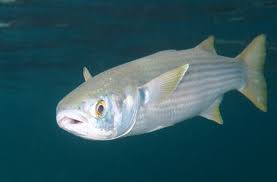
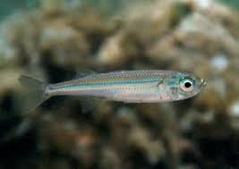

Detalles de Peces Nativos de Chile
En esta sección, encontrarás información detallada sobre tres peces nativos de Chile: la lisa, el pejerrey chileno y la trucha criolla.
| Pez | imagen | Hábitat y Ubicación Geográfica | Hábitos Alimenticios | Reproducción |
|---|---|---|---|---|
| Pez Lisa |  | La lisa es común en las aguas dulces de Chile, habita principalmente en ríos y lagos de la zona centro-sur del país. | Se alimenta principalmente de insectos acuáticos y pequeños crustáceos. | La reproducción de la lisa generalmente ocurre en primavera y verano, y las hembras ponen sus huevos en áreas con vegetación acuática. |
| Pejerrey Chileno |  | El pejerrey chileno se encuentra en ríos y lagos de Chile, especialmente en la región central y sur del país. | Es un pez omnívoro que se alimenta de pequeños invertebrados acuáticos, algas y otros peces más pequeños. | Se reproduce durante la primavera y el verano, y las hembras depositan sus huevos en áreas con vegetación acuática. |
| Trucha Criolla | .jpg) |
La trucha criolla prefiere aguas frías y oxigenadas, por lo que se encuentra principalmente en los ríos y arroyos de la cordillera de los Andes en Chile. | Es carnívora y se alimenta de insectos acuáticos, crustáceos y peces más pequeños. | Se reproduce en primavera y verano, y las hembras excavan nidos en el fondo de los arroyos para depositar sus huevos. |
Estado de Conservación
El estado de conservación de estos peces nativos de Chile varía según la especie y su hábitat específico. Algunas están amenazadas debido a la pérdida de hábitat, la contaminación del agua y la introducción de especies exóticas, mientras que otras se consideran de preocupación menor.